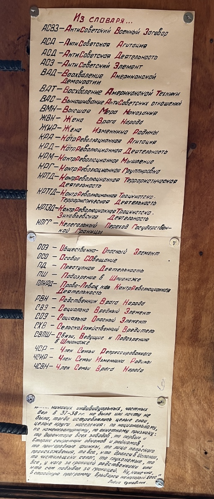

Моя позиция

Хочу как-то зафиксировать свою позицию:
- Убивать, пытать и унижать людей недопустимо, никак и никогда.
- Никакого особого пути у России нет, Россия такая же страна, как и любая другая, развитие вне мировой экономики для России не даст никаких преимуществ, а только усугубит ее отставание по всем направлениям.
- Для России нет никакой внешней угрозы, никто не хочет ее разделения. Для того, чтобы утверждать обратное, требуется больше доказательств, чем пропагандистские речи, транслируемые с экранов телевизоров.
- Чем дольше человек находится у власти, тем больше его желание эту власть удержать и усилить всеми доступными способами, включая развязывание бессмысленной войны с братским народом. Сменяемость власти — механизм защиты от подобного.
- Попытка переписать историю, оставляя в ней только победы, не поможет избежать ошибок в будущем, для этого требуется осознать и принять прошлое, каким бы оно ни было.
- Для того, чтобы сказать правду, не требуется никому затыкать рот, даже если вы с ним совершенно несогласны. Правда от этого не становится меньшей правдой. И наоборот, если вы лишаете слова всех вокруг — это повод задуматься, правда ли то, что вы говорите.
Как-то так.
Картинка выше из музея Левашовской пустоши.